CartoonGAN
CartoonGAN - my attempt to implement it
Within this repo, I try to implement a cartoon GAN as described in this paper [1] with PyTorch.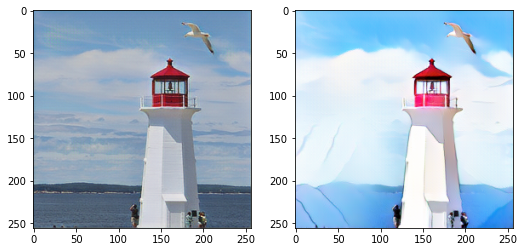
Generate dataset
For training the GAN, photos and cartoon images are needed. I provide scripts to locally download these images from public and legally-to-use sources. As this are not the same input data as used in the paper, this may be a point of discussion. See the following sections for more information about the data I used.Cartoon images
In the original paper, the data was produced by extracting images from anime movies, e.g. the movie "Spirited Away" by Miyazaki Hayao.Due to copyright reasons I tried to find an alternative dataset, which I have found in the safebooru [2] dataset from kaggle. Problem of this procedure are the different creators and their different styles of the images. This will lead to training data from which it is hard to learn from. This will not train the network properly I think, but I give it a try. In the paper, only one style from one artist is used.
I get the cartoon part of the dataset for my implementation of the cartoon GAN the following way:
- download
all_data.csvfrom safebooru dataset here - point to
all_data.csvinPATH_TO_SAFEBOORU_ALL_DATA_CSVofcartoon_image_downloader.py - configure the folder where you want the script to download the images to in
PATH_TO_STORE_DOWNLOADED_CARTOON_IMAGES - the script creates a .zip-file of the downloaded images, configure path where to store resulting .zip-file in
CARTOON_IMAGES_ZIPFILE_NAME - run
make installto install necessary libraries - run
make cartoonsto download configurable amount of medium size images
Edge-smoothed version of cartoon images
To make the GAN better learn to produce clear edges in the cartoon image, the model is trained with an edge-smoothed version on every cartoon image, too. In the paper, the edges are first detected by canny-edge, then the edges are dilated and smoothed with gaussian smoothing. In my implementation, I do the canny edges, the dilation and the gaussian blur with openCV and I make the white backbground transparent and paste the edges back on the original image with Pillow.I create a edge-smoothed version of every cartoon image:
- use downloaded images from safebooru as described in previous step
- configure where the cartoon images are stored in
PATH_TO_STORED_CARTOON_IMAGESincartoon_image_smoothing.py - configure where to store smoothed images in
PATH_TO_STORE_SMOOTHED_IMAGES - configure where to store resulting .zip-file of images in
SMOOTHED_IMAGES_ZIPFILE_NAME - run
make cartoons-smoothto create the images
Photos
In the paper, photos are downloaded from flickr. In my implementation I try to use the COCO [3] dataset, especially the category person.I get the photos for the dataset by following the COCO part as described in [4]:
- download and unzip coco annotations from [5]
- configure annotations dir location in
PATH_TO_COCO_ANNOTATIONS_ROOT_FOLDERofphoto_downloader.py - configure where to store photos in
PATH_TO_STORE_DOWNLOADED_PHOTOS - configure where to store resulting .zip-file of images in
PHOTO_ZIPFILE_NAME - run
make photosto download configurable amount of photos of persons
Prepare to train within Google Colab
As Google Colab offers free GPU-usage in a jupyter notebook, I used this service and declared all the necessary elements e.g. the model or optimizer within a notebook. Transfering the training data and saving some results is done via Google Drive. Due to the whole training took about 24h, I made the processes in the notebook resumeable.Transfer data via Google Drive
As a first step, I transfer the in the previous step generated images from my local machine to Google Drive and connect the jupyter notebook in Google Colab to this drive. After that I directly copied the files to the notebook folder. I described the details of this step within the colab notebook.Data loader
I create a data loader for every kind of input image (cartoons/smoothed cartoons/photos) to transform the images and to split into training and validation sets by a 90/10-ratio.As mentioned in the paper, the used image size is 256x256 pixel. The Generator uses ReLu as activation function, which generates values in the range of [0.0, 1.0]. As the
ToTensor()-method changes the range of the input image from RGB [0, 255] to [0.0, 1.0], we get the same range for all images.
image_size = 256
batch_size = 16
transformer = transforms.Compose([
transforms.CenterCrop(image_size),
transforms.ToTensor()])
cartoon_dataset = ImageFolder('cartoons/', transformer)
len_training_set = math.floor(len(cartoon_dataset) * 0.9)
len_valid_set = len(cartoon_dataset) - len_training_set
training_set, _ = random_split(cartoon_dataset, (len_training_set, len_valid_set))
cartoon_image_dataloader_train = DataLoader(training_set, batch_size, shuffle=True, num_workers=0)
Define model
The information about the model structure is given in the paper. See Colab notebook for model definition.Padding
For thezero padding of the convolutional layers, I use the following formula:
$$Height x Width_{output} = \frac{HeightxWidth_{input} - kernel size + 2 padding}{stride} + 1$$
e.g:
conv_1 layer of generator: $HxW$ should stay the same as input size, which is 256x256 and stride = 1
$$256 = \frac{256-7+2padding}{1}+1, padding = 3$$
In case of a fraction as a result, I choose to ceil:
conv_2 layer of generator: $\frac{H}{2} x \frac{W}{2}$ is output with stride=2
$$128 = \frac{256-3+2padding}{2}+1, padding= \frac{1}{2} \Rightarrow padding=1$$
Stride
In the up-convolutional part of the paper, two layers (conv_6 and conv_8 in my implementation) have a stride of 0.5. As PyTorchsconv2D() does not allow floating point stride, I use a stride of 1 in both cases. Therefore even for the padding calculation I go with a stride of 1.
Learnings
After implementing the generator and getting some results out of the training, the generated images have a wide grey margin, like in this example image: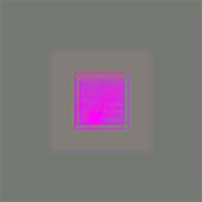
I re-checked my implementation of the generator and stumbled across my interpretation of the stride for conv_8, which is $\frac{1}{2}$ in the paper. Maybe I got the part of the stride wrong, and this is not $\frac{1}{2}$, but a tuple of $(1,2)$? If so, I did a wrong padding calculation. This are the only layers where I calculated a very large padding of 33 and 65, which looks suspicious now.
Testing a tuple of $(1,2)$, I also ended up with very high values for the padding.
The next problem was, that I used Conv2d for up-sampling, but Conv2d is for down-sampling. ConvTranspose2d is for up-sampling, see [6] and [7]. I corrected my implementation accordingly.
By using ConvTranspose2d with the values for stride (1 or (1,2)) and kernelsize, and playing with padding, the resulting image keeps nearly the same dimension, shrinks or gets uneven dimensions.
$$ HeightxWidth_{Output} = stride (HeightxWidth_{Input} - 1) + kernelsize - 2*padding$$
$$ HeightxWidth_{Output} = 1 * (64 - 1) + 3 - 2 * padding = 66 - 2 * padding = \bigg\{^{66, p = 0}_{<0, p < 0}$$
Uneven dimensions: I tested stride $(1,2)$ with padding $(3,2)$ and got $60x125$ as image size.
But as mentioned in the paper, I need to scale from $\frac{H}{4}$ up to $\frac{H}{2}$, which is from 64 to 128, and then up to 256 in conv_8 and conv_9. Therefore I decided to use stride=2 and padding=1 in conv_6, and stride=2 and padding=1 in conv_8. To add the last pixel, I add an output_padding of 1.
conv_6: $2*(64-1)+3-(2*1)=127 + 1$ (outer_padding)
conv_8: $2*(128-1)+3-(2*1)=255 + 1$ (outer_padding)
Loss function
$$\mathcal{L}(G, D) = \mathcal{L}_{adv}(G, D) + ω\mathcal{L}_{con}(G, D), \omega=10$$ This loss is used to train the discriminator and the generator. In the adversarial part, the discriminator tries to classify the generated images as fakes. During the generator training, the generator tries to minimize the classifications, where the discriminator classifies the generated image as fake. The generator has only affect on the parts of the formula where $G()$ is involved, so the generator tries to minimize this part. Additionally, the loss is not directly calculated from the generator output, but from the discriminator output. Due to the fact that the generator output is the input for the discriminator output in the generator training, the generator is in the chain of the backpropagation, when the loss from the discriminator output is backprogagated all the way back through the discriminator model and generator model to the photo image input data, see [8] and [9].Adversarial loss
The adversarial loss $\mathcal{L}_{adv}(G, D)$ which drives the generator to transform photo to comic style of the image. Its value indicates if the output looks like a cartoon image or not. The paper highlights, that a characteristic part of cartoons images are the clear edges, which are a small detail of the image, must be preserved to generate clear edges in the result. In the paper, this is solved by training not only with cartoon images but additionaly by training with the same cartoon images with smoothed edges so that the discriminator can distinguish between clear and smooth edges. For achieving this the authors define the edge-promoting adversarial loss function: $$\mathcal{L}_{adv}(G, D) = \mathbb{E}_{ci∼S_{data}(c)}[log D(c_i)] + \mathbb{E}_{ej∼S_{data}(e)}[log(1 − D(e_j))] + \mathbb{E}_{pk∼S_{data}(p)}[log(1 − D(G(p_k)))]$$For the discriminator, this is the formula for the loss function, because output of the Discriminator plays no role within the content loss part of the loss function.
For the initialization phase of the generator, this part of the formula is not used as described in the paper.
For the training phase of the generator, only the part of the formula is used within the generator loss function, which the generator can affect: $$\mathbb{E}_{pk∼S_{data}(p)}[log(1 − D(G(p_k)))]$$
Content loss
The content loss $ω\mathcal{L}_{con}(G, D)$, which preserves the semantic content during transformation. To calculate this, in the paper the high-level feature maps of the VGG network is used, in particular the layer $l=$conv4_4. The output of the layer $l$ for the original photo is subtracted from the output of the layer $l$ of the generated image. The result is regularized using the $\mathcal{L_1}$ spare regularization ($||...||_1$):
$$\mathcal{L}_{con}(G, D)= \mathbb{E}_{pi~S_{data}(p)}[||VGG_l(G(p_i))-VGG_l(p_i)||_1]$$
This part of the formula plays a role in the loss function for the generator, not for the discriminator, because only the generator is used within this formula.
More info about $\mathcal{L_1}$ regularization in [10] and [11].
Learnings
At this section I will describe my learnings during implementing/testing the loss functions.
Loss function implementation
At my first implementation, I took the output of the discriminator with sizebatch_size x 1 x 64 x 64 as input to the discriminator loss (to be precise, all three outputs of D, from D(cartoon_image), D(smoothed_cartoon_image) and D(G(photo))).
As the adversarial loss outputs a probability which indicates if the input is detected as fraud or not, it returns a single value. To reach this, I took the input tensor with shape batch_size x 1 x 64 x 64, and implemented the loss function
$$\mathcal{L}_{adv}(G, D) = \mathbb{E}_{ci∼S_{data}(c)}[log D(c_i)]
+ \mathbb{E}_{ej∼S_{data}(e)}[log(1 − D(e_j))]
+ \mathbb{E}_{pk∼S_{data}(p)}[log(1 − D(G(p_k)))]$$
manually as
$$torch.log(torch.abs(D(...)) + torch.log(torch.abs(1 - D(...)) + torch.log(torch.abs(1 - D(...))$$
As the discriminator output sometimes contains negative values, calling log() directly with this value causes an error. Therefore I wrapped abs() around the input of log().
As my training results weren't as expected, I came back to the loss functions. As an adversarial loss outputs a probability, thus a single value, my discriminator outputs a tensor with shape batch_size x 1 x 64 x 64.
BCEWithLogitsLoss, which combines activation function and loss.
But which activation function to use?
As the discriminator should give a probability and only has two classes as outputs, real or fake, using sigmoid or softmax is a good choice. Softmax can be used for binary classification as well as classification of $n$-classes.
First, I decided to use a loss function, which combines activation and loss function, and this gave me the choice between:
BCEWithLogitsLoss: Sigmoid and binary cross entropy lossCrossEntroyLoss: Softmax and negative log likelihood loss
For solving a minimax-problem, which loss to choose?
"If [minimax] implemented directly, this would require changes be made to model weights using stochastic ascent rather than stochastic descent. It is more commonly implemented as a traditional binary classification problem with labels 0 and 1 for generated and real images respectively."
Therefore I choosed BCEWithLogitsLoss.
As BCEWithLogitsLoss has two parameters, one for the input and one for the target, I used BCEWithLogitsLoss three times, one for every different input, and added the values up.
But, after trying to go with this solution, the generator produces values lower than zero. This lead to problems when trying to map these values to RGB. Therefore I decide to not combine activation and loss function, and use sigmoid in the generator as well as in the discriminator directly and use BCELoss as loss function.
Parameter $\omega$
Training round 1
Initially, I set $\omega$, which is a weight to balance the style and the content preservation, to the value given in the paper, which is 10. After running 210 epochs, the content preservation was very good, but the generated images do not have cartoon styles. Maybe this is a problem with my input data, where I use different cartoon styles from different artists instead from one single artist, as used in the paper.
| direct after start, one of the first epochs | |
| 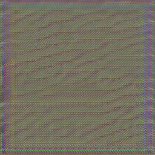 | |
| direct after init-phase is completed | |
| Photo input | Generated image |
| 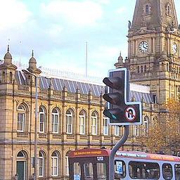 | 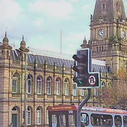 |
| direct at the beginning of epoch 11 with use of full generator loss instead of init loss. These results seem to be outliers at this stage of training due to the next outputs look more similar like the inputs | |
| Photo input | Generated image |
| 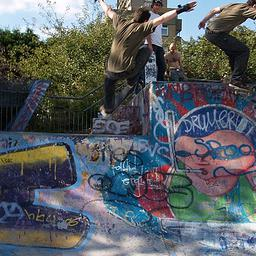 | 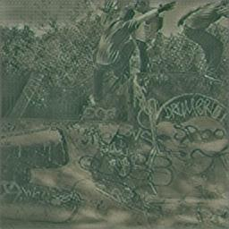 |
 |
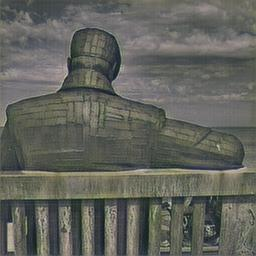 |
| After training has finished 210 epochs, the output looks like this | |
| 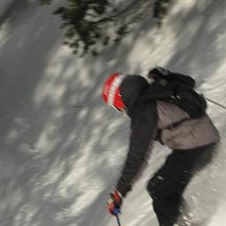 | 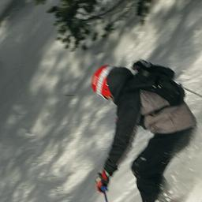 |
| 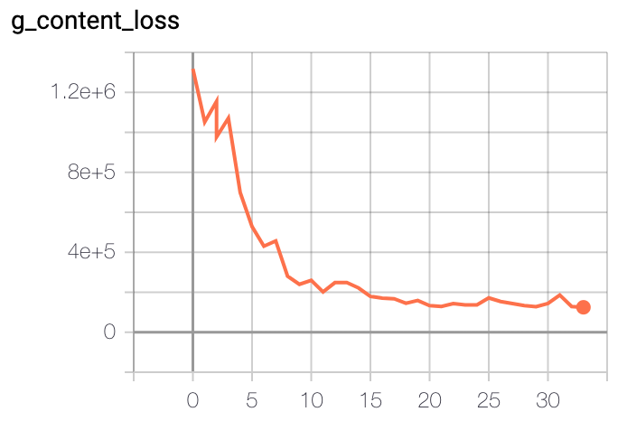 | 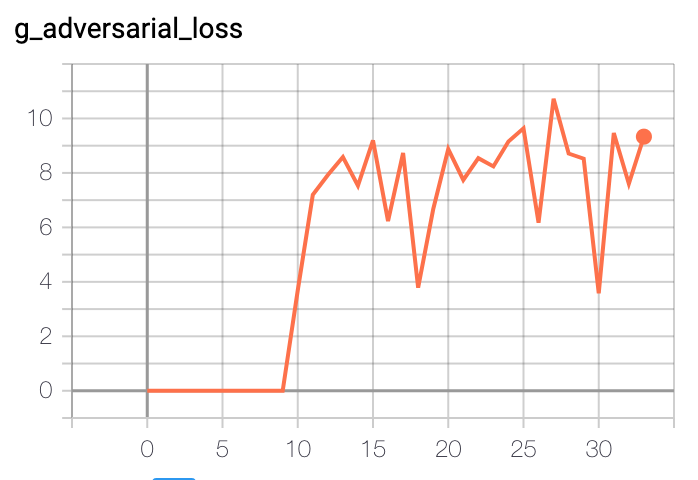 |
So the content loss is magnitudes higher than the adversarial loss.
Maybe my calculation of the content loss is wrong? Should it be much lower? As the generated images preserve the content very good, I concentrate on the adversarial loss.
Maybe I use the wrong VGG-Model? Image preservation is not the problem, therefore I concentrate on comic style.
As the adversarial loss is responsible for the comic-effect, I try a much lower $\omega$, to balance the values of g_content_loss and g_adversarial_loss on an equal level for the next training round.
Training round 2
As g_content_loss has values of $4e+5$, I choose $\omega=0.00001$. After 210 epochs, the result is the following:
| 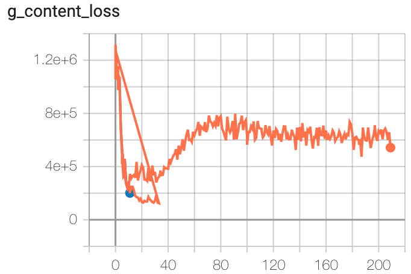 | 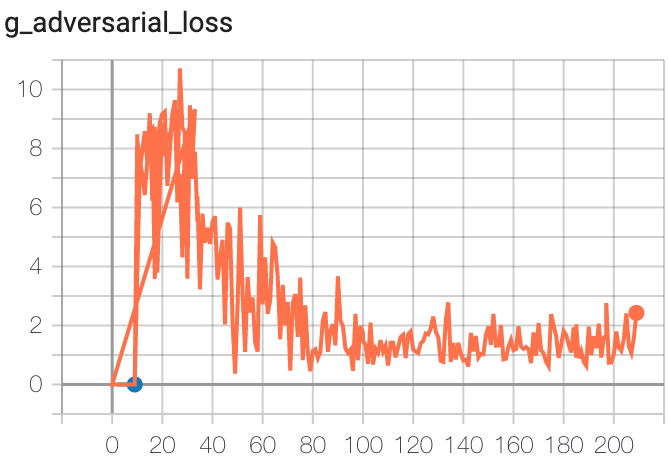 |
| 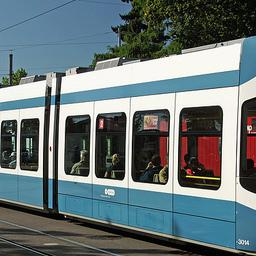 | 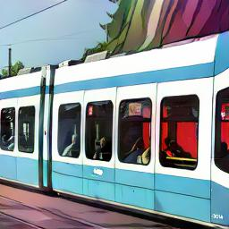 |
| 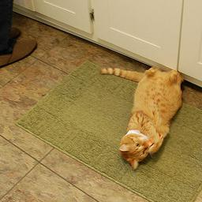 | 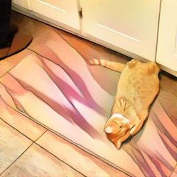 |
The optimization of the content loss falls a little behind in comparison to training round 1, where $\omega$ was much higher and therefore plays a bigger role in the total loss.
On the other hand, the optimization of the adversarial loss gets better, due it plays a bigger role for the total loss.
As seen in the example images, the comic effect starts to kick in and the content is still preserved.
As a next trial, I set $\omega=0$, to have the optimization effect on the adversarial loss only.
Training round 3
With $\omega=0$, the trained model looses the content information but the comic-style hits through:
| not part of the loss result due to set to zero, but plotted here to visualize! 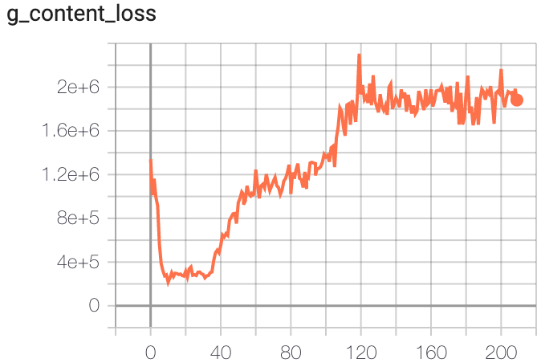 | 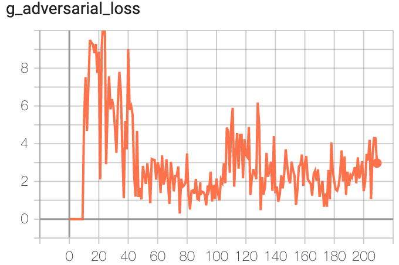 |
| 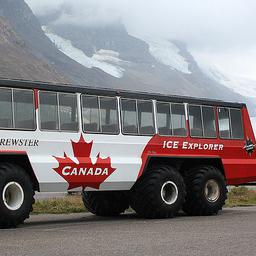 | 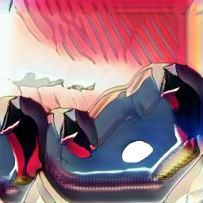 |
| 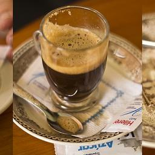 | 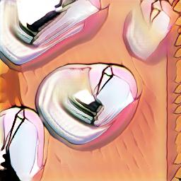 |
As comic-style starts to hit through around $\omega=0.00001$ and has full dominance at $\omega=0$, I try some $\omega$ between these values for the next round.
Training round 4
Set $\omega = 0.00001 / 2 = 0.000005$
Unfortunately, I did not clean up my tensorboard results folder before re-training, so the results are plotted to the existing ones from round 3.
| 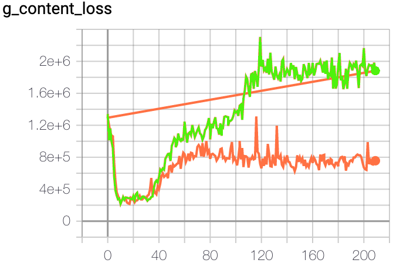 | 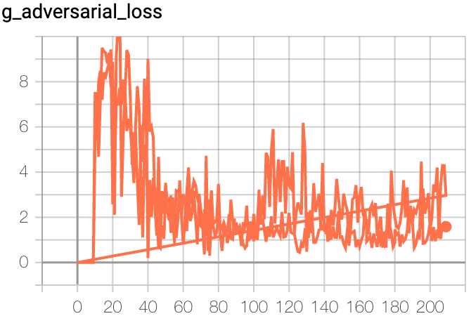 |
| 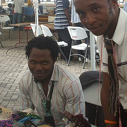 | 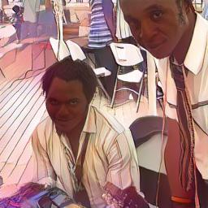 |
| 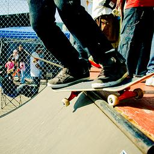 | 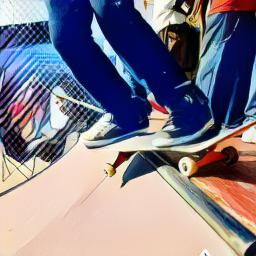 |
| 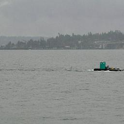 | 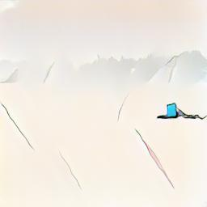 |
| 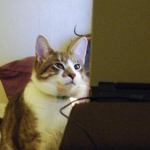 | 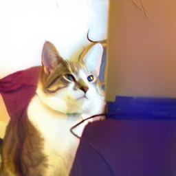 |
Not every image is transformed as desired, but the results are there :-)
Optimizer
In the paper, the used optimizer is not mentioned, I decide to choose adam.
For hyperparameter-tuning, I decided to go with the same parameters mentioned in the DCGAN-paper [13].
Transforming an image from local filesystem
For transforming an image from local filesystem, pre-trained weights are provided within the release here.- download and unzip
generator_release.pth.zipto root path of this project - install necessary libs via
make install-transform - transform image (*.jpg, *.png) from local filesystem via
make transform IMAGE=path_to_image - e.g.:
make transform IMAGE=~/Pictures/photo.jpg transformed.JPGis created
Credits
Thanks to the authors Chen et al.[1] of the paper for their great work.Notes/next steps
- alternative lib for image processing: https://github.com/albu/albumentations
- figure out which variant of VGG to use (VGG-16?), and if the pre-training in the referenced paper is the same as the pre-trained pytorch version
- do I use correct normalization-method in content loss
- in which order is the discriminator trained regarding photos, cartoons with smoothed edges and then genereated images?
- evaluate result with existing model http://cg.cs.tsinghua.edu.cn/people/~Yongjin/CartoonGAN-Models.rar?
- did I split the loss function correctly for the D and G model, and content loss only for G?
- plot results directly from vars via method
- in the paper 6.000 photo images and 2.000 - 4.000 cartoon images are used for training, how is this done with unbalanced datasets?
- is batch_size of 16 correct? Tried 32 before, but got CUDA OOM
- for image downloader: catch exception if image is truncated/check if zipping adds additional folder within .zip in create_smoothed_images.py
References
[1] http://openaccess.thecvf.com/content_cvpr_2018/papers/Chen_CartoonGAN_Generative_Adversarial_CVPR_2018_paper.pdf[2] https://www.kaggle.com/alamson/safebooru
[3] http://cocodataset.org
[4] https://github.com/cocodataset/cocoapi/blob/master/PythonAPI/pycocoDemo.ipynb
[5] http://images.cocodataset.org/annotations/annotations_trainval2017.zip
[6] https://medium.com/activating-robotic-minds/up-sampling-with-transposed-convolution-9ae4f2df52d0
[7] https://towardsdatascience.com/is-the-transposed-convolution-layer-and-convolution-layer-the-same-thing-8655b751c3a1
[8] https://developers.google.com/machine-learning/gan/generator
[9] https://towardsdatascience.com/only-numpy-implementing-gan-general-adversarial-networks-and-adam-optimizer-using-numpy-with-2a7e4e032021
[10] https://medium.com/mlreview/l1-norm-regularization-and-sparsity-explained-for-dummies-5b0e4be3938a
[11] https://medium.com/@montjoile/l0-norm-l1-norm-l2-norm-l-infinity-norm-7a7d18a4f40c
[12] https://machinelearningmastery.com/generative-adversarial-network-loss-functions/
[13] https://arxiv.org/pdf/1511.06434.pdf